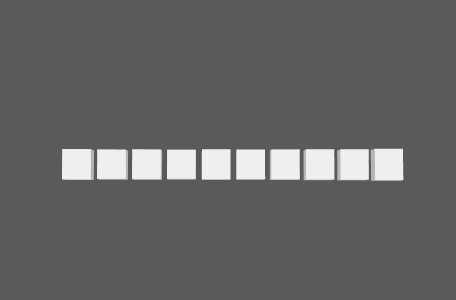

使用音频文件增强点动画。音频(Audio)支持未压缩的 WAV 和 AIFF 文件。系统将自动检测采样率。
音频节点
-
模式(Mode)
-
确定使用音频文件的哪个部分来驱动动画。“光谱”(Spectrum)使用其 EQ 频率，而“平均”(Average)则使用其平均体积。
-
输出模式(Output Mode)
-
确定用于对动画应用结果的方法。“法线”(Normal)将结果添加到传入通道，而“相乘”(Multiply)将结果应用为因子。
-
文件名(Filename)
-
指定源音频文件。
-
位置 X(Position X)、位置 Y(Position Y)、位置 Z(Position Z)
-
指定音频文件对点平移的影响程度。该值介于所输入值的正负两端之间（包括正值和负值）。
-
旋转 X (Rotate X)、旋转 Y (Rotate Y)、旋转 Z (Rotate Z)
-
指定音频文件对点旋转的影响程度。该值介于所输入值的正负两端之间（包括正值和负值）。
-
缩放 X (Scale X)、缩放 Y (Scale Y)、缩放 Z (Scale Z)
-
指定音频文件对点缩放的影响程度。该值介于所输入值的正负两端之间（包括正值和负值）。
-
变换空间(Transformation Space)
-
确定是相对于点的共享“世界”(World)空间还是其各自的“局部”(Local)空间变换点。
频率曲线图
频率曲线图控制使用哪些步骤获得结果。该图横跨整个网络，因此通过标识低音，可以围绕其制图来隔离该频率等等。
-
图形均衡器(Graphic Equalizer)
-
使用鼠标中键将 MASH 点节点拖到此处，以便可视化“音频”(Audio)节点的效果。您可以单击鼠标右键来显示或移除现有连接。
-
最大条带数(Max Bands)
-
确定将处理的最大频率数。
-
过滤(Filtering)
-
添加 IIR（无限冲量响应）过滤器。值越大，音频输入的最小振幅与最大振幅之间的变化将越小。
-
平滑(Smoothing)
-
确定要用于平滑的帧数。MASH 对指定的音频帧数进行采样并算出其平均值。
-
阈值下限(Lower Threshold)、阈值上限(Upper Threshold)
-
确定最小和最大放大器值（所有小于或大于阈值的输入均会忽略）。
强度
-
强度(Strength)
- 同时减弱对所有点的节点效果。
-
随机强度(Random Strength)
- 按随机顺序平滑地减弱所有点的节点效果。
-
阶跃强度(Step Strength)
- 每次禁用一个点的节点效果。
-
强度贴图(Strength Map)
- 确定输入文件（2D 纹理、动画纹理等）来控制该节点的效果的形状。
-
贴图投影轴(Map Projection Axis)
- 确定投影“强度贴图”(Strength Map)时所沿的轴。
-
贴图辅助对象(Map Helper)
- 显示用于在场景中交互放置“强度贴图”(Strength Map)的对象。可以在该字段上单击鼠标右键来创建新的辅助对象（平面）（如果不存在）。还可以使用鼠标中键将网格拖入此字段，或者单击鼠标右键连接选定网格。如果网格已连接，还可以单击鼠标右键来断开其连接或者将其显示在大纲视图中。
注： 为获得最佳结果，请将相同的纹理指定给“强度贴图”(Strength Map)和“贴图辅助对象”(Map Helper)（在创建新的辅助对象时将自动执行此操作）。
时间
-
时间(Time)
-
显示当前帧。
-
时间偏移(Time Offset)
-
从时间轴的开头偏移声音。
-
平均时间步(Time Step Average)
-
平均体积将向下传递至直线。默认设置为启用。
高级选项
-
傅立叶缩放(Fourier Scaling)
-
确定要应用于音频输入的傅立叶缩放类型。选项包括：
- 正常(Normal)：不应用缩放
- 平方根(Sqrt)：增大音频输入
- 日志(Log)：增大音频输入更甚于“平方根”(Sqrt)。
-
输出频率属性(Output Frequency Attributes)
-
确定是否通过“相等输出”(Eq Output)属性输出频率值。
-
出量模式(Out Volume Mode)
-
确定“输出量”(Out Volume)属性的值。
-
体积(Volume)
-
显示由“出量模式”(Out Volume Mode)确定的当前“输出量”(Out Volume)属性值。